China Employee Termination: Night-Watch Brief for Foreign Employers (Hourly Testing Run)
Key takeaways
- Foreign employers should treat China termination cases as a 24-hour control problem, especially during overnight handoffs.
- Most preventable failures happen when unresolved risks are handed off without clear owners or next actions.
- A Pulse-style night-watch brief gives leadership a concise status picture plus immediate actions.
- Legal route validity and execution readiness are separate gates; both must stay green through closure.
- Legal detail should stay in an appendix while the main narrative remains action-first.
Pulse lead
This run rotates to a night-watch format. The goal is to make overnight risk transfer safe: what is still open, what can wait, and what must trigger immediate escalation before the next shift.
Plain-language legal/regulatory context first
China’s Labor Contract Law sets route boundaries and severance obligations. Implementation regulations and SPC interpretation shape dispute review around fairness, document reliability, and consistency between rationale and execution records. For foreign operators, practical meaning is clear: legal route, evidence chronology, communication discipline, and settlement execution must remain aligned throughout.
Night-watch board (open risk → overnight impact → required action)
Watch Item 1: Route assumption at risk
- Open risk: factual change may invalidate route basis
- Overnight impact: next-shift execution may proceed on stale assumptions
- Required action: freeze next step and queue route revalidation at shift start
Watch Item 2: Evidence contradiction unresolved
- Open risk: core chronology mismatch remains unresolved
- Overnight impact: escalation probability increases if action proceeds
- Required action: mark hard blocker and assign remediation SLA before next contact
Watch Item 3: Script-control uncertainty
- Open risk: final script not confirmed or manager variance observed
- Overnight impact: inconsistent messaging risk in next meeting window
- Required action: lock script version and issue briefing checklist
Watch Item 4: Settlement mapping ambiguity
- Open risk: legal language and payroll mapping not fully aligned
- Overnight impact: payout explanations may conflict across teams
- Required action: require legal/payroll co-sign before employee communication
Watch Item 5: Tax note inconsistency
- Open risk: payout/tax explanation differs by function
- Overnight impact: trust and compliance risk at release stage
- Required action: unify tax note and validate local assumptions if needed
Watch Item 6: Authority coverage gap
- Open risk: no active decision owner for next cutover
- Overnight impact: delay or unauthorized action risk
- Required action: confirm primary + backup approver before handoff close
Watch Item 7: Closure evidence incomplete
- Open risk: signature logged but payment proof/archive checks pending
- Overnight impact: false closure and reopen exposure
- Required action: keep case open until proof-based closure gate passes
Practical implications for foreign employers
- HQ: ask for night-watch open risks and owner SLAs, not only route status.
- Regional HR: treat unresolved critical watch items as automatic no-go at shift start.
- Payroll/finance: co-own watch items 4 and 5 before commitments.
- Managers: script discipline remains a compliance requirement.
Scenario snapshots
Snapshot A: Night-watch prevented stale-route carryover
Route risk flagged at handoff; morning shift reran route gate before contact.
Snapshot B: Settlement ambiguity blocked correctly
Watch item 4 remained open; team paused communication until worksheet relock complete.
Snapshot C: Closure false-positive avoided
Case held open overnight until payment proof and archive checks were complete.
Daily SOP (night-watch driven)
- Generate night-watch board before shift handoff.
- Assign owner/SLA for each open item.
- Tag critical items as hard blockers for next shift.
- Run legal/payroll alignment on watch items 4/5.
- Require authority confirmation for cutover windows.
- Execute only after critical blockers clear.
- Close only when watch item 7 is fully satisfied.
Required document checklist
- route memo + revalidation triggers
- chronology map + contradiction register
- script lock + briefing evidence
- settlement worksheet + tax note
- authority matrix (primary/backup)
- night-watch log with owner/SLA
- payment proof + reconciliation
- closure audit + archive checklist
Escalation ladder
- Tier 1: case owner triage
- Tier 2: legal/payroll technical validation
- Tier 3: regional go/no-go authority
- Tier 4: executive escalation for material business impact
Governance cadence
- Daily handoff: night-watch board refresh
- Weekly (30 min): critical item aging and SLA breaches
- Monthly (60 min): repeat pattern review and control recalibration
KPI pack
- unresolved critical watch items
- aging over SLA
- script-drift frequency
- settlement relock rate
- closure lag (signature to verified close)
- 30-day reopen rate
If 2+ KPIs worsen for 2 cycles, trigger corrective cross-functional review.
Common mistakes and prevention
- Mistake: handoff without explicit blockers
Prevention: mandatory night-watch board and owner assignment.
- Mistake: route-only confidence
Prevention: dual-gate model (legal + execution).
- Mistake: closure at signature
Prevention: proof-based closure gate.
What to do this week
- Roll out one-page night-watch template.
- Define hard-blocker criteria for overnight handoffs.
- Require legal/payroll co-sign before commitments.
- Confirm primary/backup authority each day.
- Start weekly KPI review and monthly recalibration.
- Add city-level overlays with local counsel.
What to watch next
- continued scrutiny on evidence/procedural coherence
- sustained sensitivity around payout/tax explanation quality
- city-level variance requiring threshold tuning
FAQ
Is a night-watch model legally required?
No. It is an operational governance model.
Can smaller teams use this?
Yes. Start with watch items 1-5.
Why is this useful for foreign clients?
It prevents overnight drift and clarifies ownership across time zones.
Is negotiated termination always safer?
Not automatically; execution coherence remains decisive.
When should external PRC counsel be mandatory?
High-risk unilateral routes, protected-status concerns, restructuring, and multi-city complexity.
Legal depth appendix
Anchors: PRC Labor Contract Law, State Council implementation regulations, and SPC labor-dispute interpretation. Practical implication: legality, fairness, and documentary reliability are jointly assessed in disputes.
Disclaimer
Informational only; not legal, tax, or employment advice. Seek qualified PRC advice for case-specific matters.
Sources
- National People’s Congress — Labor Contract Law of the PRC (English), 2007-12-13: http://www.npc.gov.cn/zgrdw/englishnpc/Law/2007-12/13/content_1384064.htm
- State Council — Implementation Regulations of the Labor Contract Law (Decree No. 535), 2008-09-18: https://www.gov.cn/gongbao/content/2008/content_1124615.htm
- Supreme People’s Court — Interpretation on Labor Dispute Application Issues (Fa Shi [2020] No. 26), 2020-12-29: https://www.court.gov.cn/fabu/xiangqing/243981.html
- China Briefing / Dezan Shira — Employee Termination in China, 2025-10-17: https://www.china-briefing.com/news/employee-termination-in-china/
- Littler — Key Recent Developments in China’s Employment Law, 2024-03-20: https://www.littler.com/news-analysis/asap/key-recent-developments-chinas-employment-law-china-us-comparative-perspective
- PwC Worldwide Tax Summaries — PRC Individual Taxes on Personal Income, 2025-01-15: https://taxsummaries.pwc.com/peoples-republic-of-china/individual/taxes-on-personal-income
Handoff packet standard (minimum content)
Every overnight handoff should include:
- open watch items + severity
- owner and SLA for each item
- explicit hold/release recommendation
- unresolved dependency list
- first action required at next-shift start
This reduces ambiguity and protects continuity across time zones.
City-overlay and local-practice note
Use one global baseline with city overlays:
- local counsel trigger points
- local evidence sensitivity flags
- local settlement communication cautions
- local dispute timeline assumptions
This helps foreign operators balance consistency with local variation.
Expanded scenario clinic
Scenario D: Watch item 2 + 3 combined
Chronology contradiction and script uncertainty remained open at handoff. Team kept a hard hold, corrected narrative controls, and resumed only after both items cleared. Outcome: reduced next-day escalation.
Scenario E: Watch item 5 near payout window
Tax explanation mismatch appeared in final prep. Team unified note and validated assumptions before release. Outcome: cleaner employee communication and reduced reopen risk.
Leadership one-page night-watch output
- active critical items and status
- owner/SLA table
- go/no-go recommendation
- residual risk statement
- next checkpoint time and approver
This keeps decisions fast, comparable, and audit-ready.
Weekly execution review checklist
- Review unresolved critical watch items and aging trend.
- Validate owner accountability and overdue SLA recovery plans.
- Identify recurring item combinations and likely root causes.
- Assign one preventive control update for next cycle.
- Record lessons and update handoff template language.
Monthly recalibration workshop
Run a 60-minute cross-functional review with HR, legal, payroll, and regional leadership:
- top recurring overnight failure clusters
- root-cause analysis per cluster
- one control change per cluster
- owner + deadline assignment
- verification of prior month improvements
KPI intervention matrix
- Green: stable/improving KPIs → maintain controls.
- Amber: one-cycle deterioration → increase monitoring + targeted coaching.
- Red: two-cycle deterioration → mandatory corrective plan and leadership sign-off.
This prevents delayed intervention when trends are visible.
Need local employment support in China?
If you need a compliance-first partner for hiring, payroll, and risk controls in China, China-Payroll.com can help evaluate the right setup.
Image Prompt Pack
Create a 16:9 hero image for article title: 'China Employee Termination: Night-Watch Brief for Foreign Employers (Hourly Testing Run)'. Scene: global operations team evaluating workforce model options for China market entry. Include motifs: decision matrix, or…